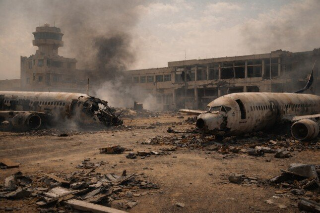

العقل السوداني بين الألم النفسي وذاكرة القلب الحزين
في الحروب، لا يأتي الخطر دائمًا من قصف أعمى متكرر، أو طلقات رصاص لا تُفرّق بين طفل رضيع وكهل قعيد، أحيانًا يتخفّى الخطر في الصمت الذي يعقب الانفجار، وفي الهدوء الذي يخيّم بعد الفوضى، وفي ذلك الفراغ الذي يستقر داخل الإنسان عندما ينجو جسده بينما تبقى نفسه ملتصقة بآلام القهر. عندما تختلط الحرب بالحياة اليومية حتى يفقد الإنسان القدرة على الفصل بينهما، لا تتوقف المعاناة عند القتل والدمار والنزوح، هناك مواجهة أخرى، أعمق وأطول أمدًا، تدور داخل العقول، في الذاكرة، وفي الجسد الذي يواصل التصرّف وكأن التهديد لم ولن يغادر المكان.
اقرأ المقال كاملًامن مقالات الكاتب الصحفي أحمد هريدي في جريدة الأسبوع
9 فبراير 2026 اعترافات متأخرة في ورشة "الشاطر" التي حطمت أوهام "الإخوان" 2 فبراير 2026 سقوط الأقنعة بين "المدينة الفاضلة" ومستنقع شياطين "الإخوان" 26 يناير 2026 العقل السوداني بين الألم النفسي وذاكرة القلب الحزين 5 يناير 2026 السموم المعلوماتية والتضليل الرقمي في التحليل السياسي والاقتصادي 10 نوفمبر 2025 حكايات من مناجم الذهب الرقمية 4 أغسطس 2025 المؤشرات الاستخباراتية وأمن السفارات بين الوقاية والمساءلة الدولية 2 يونيو 2025 الفوضى الرقمية بين أوهام الحرية والخصوصية المستباحة 19 مايو 2025 نزيف العملات عبر الألعاب الإلكترونية.. الأزمة والحل 5 مايو 2025 إدارة الحملات الانتخابية بين التخطيط الاستراتيجي والأخطاء القاتلة 20 يناير 2025 تحالف الظلام بين بارونات المخدرات وأمراء التنظيمات الإرهابيةالموقع تحت التحديث
حوار الأسرار وانفراد خاص

اللواء حسن عبد الرحمن رئيس مباحث أمن الدولة السابق يتحدث عن أسرار أحداث يناير 2011
نُشر في جريدة الأسبوع بتاريخ الإثنين 20 فبراير 2017م.